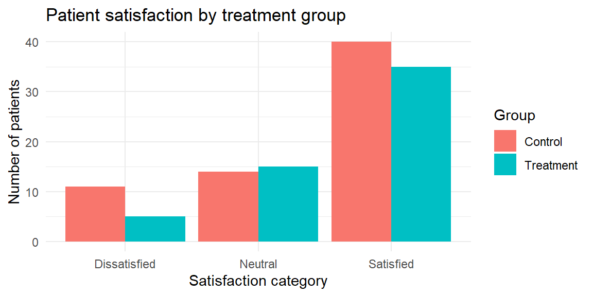
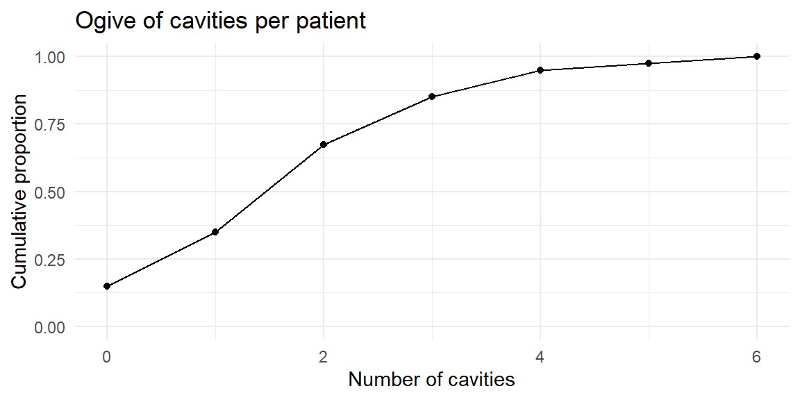

| response | frequency | relative_frequency |
|---|---|---|
| Back pain | 9 | 0.3000000 |
| Fatigue | 9 | 0.3000000 |
| Headache | 8 | 0.2666667 |
| Nausea | 4 | 0.1333333 |
3 Describing Data with Tables and Graphs
3.1 Organizing Categorical Data
“The greatest value of a picture is when it forces us to notice what we never expected to see.” – John Tukey
When you collect data that fall into groups—like preferred streaming service, political affiliation, or type of pet—the first step is to count how many observations fall into each category. Those counts form the backbone of both tables and graphs for categorical data. In this section we’ll learn how to build simple frequency tables, translate them into proportions or percentages, and organize two categorical variables together in a two‑way table. Along the way we’ll see when different visual summaries make sense and preview bar and pie charts (covered in detail in Section 3.2).
Frequency and relative frequency tables
A frequency table is a basic but powerful tool for summarizing a categorical variable. It lists each distinct category and records how many observations fall into that category. By organizing raw data into counts, a frequency table provides an immediate snapshot of how the data are distributed across categories, making patterns and imbalances easy to see.
A typical frequency table has two columns: one for the category labels and one for their frequencies (counts). Constructing a frequency table involves identifying all possible categories and tallying the number of observations in each. This process is often the first step in data analysis because it reduces a potentially large and messy dataset into a clear and interpretable summary.
While frequency tables report absolute counts, these counts can be misleading when sample sizes differ. For example, a category with 50 observations may seem large, but its importance depends on whether the total sample size is 100 or 1,000. To address this, we often compute relative frequencies.
A relative frequency expresses the count for each category as a proportion of the total number of observations. When a column of relative frequencies—or percentages—is added to a frequency table, the result is called a relative frequency table. Relative frequencies are calculated by dividing each category’s count by the total sample size. Because they represent proportions of the whole, relative frequencies always sum to 1 (or 100% when expressed as percentages).
Relative frequency tables are especially useful for comparing distributions across different samples or populations. By focusing on proportions rather than raw counts, they allow meaningful comparisons even when the underlying sample sizes are not the same. For this reason, relative frequencies are commonly used in reports, visualizations, and summaries intended for broad audiences.
In practice, frequency and relative frequency tables often serve as the foundation for graphical displays such as bar charts and pie charts, providing a clear numerical summary that complements visual representations of categorical data.
Example 3.1: Common symptoms in a clinic
Imagine you survey 30 patients at a local clinic about the primary symptom that brought them in. You record four categories: “Headache,” “Back pain,” “Fatigue,” and “Nausea.” We can organize the responses in a simple table of counts and proportions. Below we simulate such a survey and display the results.
The table lists the four categories in alphabetical order with their counts and relative frequencies. For instance, if 8 of the 30 patients reported “Headache,” the relative frequency of “Headache” is \(8/30 \approx 0.27\). The accompanying bar chart gives a visual sense of the same information: each bar’s height corresponds to a category’s frequency, and the bars are separated to emphasize that the categories have no inherent order. In practice you might reorder the bars to make the graph easier to read—perhaps putting the largest category first.
Pareto charts
Sometimes you want to highlight the few categories that account for most of the observations. A Pareto chart is a bar chart arranged in descending order of frequency and often paired with a cumulative percentage line. It helps you identify the “vital few and trivial many” in quality control and business applications. Pareto charts are useful when there are many categories and you want to focus attention on the most common causes or responses.
Tip:
In JMP you can create a frequency table by selecting Analyze → Distribution, assigning your categorical variable to the X role, and examining the resulting counts. To add relative frequencies, use the red triangle menu (▸) to choose Display Options → Show Percent. JMP’s Graph Builder will automatically construct a bar chart when you drag a categorical variable to the X‑axis and the count statistic to the Y‑axis.
Two-way (contingency) tables
When data include two categorical variables, a natural question is whether—and how—those variables are related. A two-way table, also called a contingency table, provides a clear way to summarize and explore this relationship. Rather than listing categories separately, a contingency table displays the counts for every combination of categories across the two variables.
In a contingency table, one categorical variable defines the rows and the other defines the columns. Each cell in the table shows how many observations fall into the corresponding pair of categories. The table also often includes row totals, column totals, and a grand total, which help place the individual cell counts in context.
Contingency tables are especially useful for examining associations between variables. By comparing counts or proportions across rows or columns, you can look for patterns such as whether certain categories tend to occur together more often than would be expected by chance. For example, you might ask whether voting preference differs by age group, or whether product satisfaction varies by subscription type.
To aid interpretation, contingency tables are often converted to conditional distributions by computing row or column percentages. Row percentages answer questions like “Given this row category, how are observations distributed across the columns?” Column percentages reverse the conditioning. Choosing which percentages to compute depends on the research question and which variable is considered explanatory versus response.
Contingency tables form the foundation for formal statistical analysis of categorical data. In later chapters, these tables will provide the structure for chi-square tests of independence, which assess whether the observed association between two categorical variables is stronger than would be expected from random variation alone. Even before formal testing, however, contingency tables offer a powerful descriptive tool for uncovering relationships in categorical data.
Example 3.2: symptom by age group
Suppose we collect data on the same symptom question but also record each patient’s age group: “Under 30,” “30–50,” or “Over 50.” We can summarize the joint distribution in a two‑way table.
| age_group | Back pain | Fatigue | Headache | Nausea |
|---|---|---|---|---|
| 30–50 | 3 | 4 | 5 | 3 |
| Over 50 | 2 | 3 | 1 | 0 |
| Under 30 | 4 | 2 | 2 | 1 |
Each cell in the table shows the number of patients who fall into the corresponding combination of age group and symptom. We can also compute row or column relative frequencies to see percentages within each group; for example, dividing each row by its total gives the distribution of symptoms within each age group. Contingency tables allow us to see whether symptom patterns differ across age groups and serve as input for clustered or stacked bar charts (discussed in Section 3.2).
Why percentages matter
Because categorical variables can have different numbers of levels and sample sizes can vary, relative frequencies are essential for fair comparisons. Reporting only counts can be misleading: 20 supporters of a movie genre in a survey of 50 people represent a large fraction, while 20 supporters in a survey of 500 people represent a much smaller fraction. Percentages standardize the scale.
When displaying percentages, make sure they add to 100%. In a pie chart (a circular graph we’ll describe in the next section), each slice represents a category’s percentage of the whole. Pie charts are useful for showing how the total is divided among categories, but they become cluttered with too many slices. Bar charts are more flexible: you can reorder the bars, show counts or percentages, and compare multiple groups using side‑by‑side or stacked bars.
Working in JMP
In JMP, tables and graphs for categorical variables are straightforward:
- To create a frequency table, go to Analyze → Distribution, assign your categorical variable to X, and click OK. The report shows counts and percentages; use the red triangle (▸) menu to toggle percentages, counts, or both.
- For two categorical variables, use Analyze → Fit Y by X and assign one variable to Y and the other to X. Choose Contingency Table from the platform to see the two‑way counts and associated statistics.
- To visualize categorical distributions, open Graph Builder, drag the categorical variable to the X‑axis, and drop the N summary statistic onto the Y‑axis. You can change the chart type to “Bar” or “Pie.” Dragging a second categorical variable onto the Group drop zone will create clustered or stacked bars.
Recap
| Keyword | Definition |
|---|---|
| Frequency table | A table that lists each category of a variable and the number of observations in that category. |
| Relative frequency | The proportion or percentage of observations in a category, equal to the category’s count divided by the total count. |
| Relative frequency table | A frequency table with an additional column showing the relative frequency of each category. |
| Two‑way (contingency) table | A table that displays the counts for each combination of levels of two categorical variable. |
Check your understanding
Problems
In a survey of 80 households, 32 own a dog, 20 own a cat, 12 own both, and the remainder own no pets. Construct a frequency table that shows the number and percentage of households in each pet ownership category (Dog only, Cat only, Both, None). Which visualization—a bar chart or a pie chart—would you choose, and why?
Explain the difference between a frequency table and a relative frequency table. In what situations is it more informative to look at relative frequencies rather than absolute frequencies?
What is a two‑way (contingency) table? Describe a scenario where a two‑way table could help you explore the relationship between two categorical variables.
Bar charts have spaces between bars and can be drawn in any order. Why are these design choices appropriate for categorical variables? What might go wrong if you drew the bars touching or forced them into a numerical order?
Solutions
Pet ownership table. The four categories and their counts are: Dog only (20), Cat only (8), Both (12), None (40). The total number of households is 80. The relative frequencies are 25% dog only, 10% cat only, 15% both, and 50% none. A bar chart would be preferable here because it allows you to order the bars from most to least common and makes it easy to compare magnitudes. A pie chart could work for four categories, but it becomes harder to read when slices are similar in size or when there are many categories.
Frequency vs. relative frequency. A frequency table reports the counts of observations in each category. A relative frequency table adds a column showing the proportion or percentage of observations in each category. Relative frequencies are more informative when comparing groups of different sizes or when you want to focus on the distribution rather than the sample size—for example, comparing survey results from two classes of different sizes.
Contingency table example. A two‑way table displays counts for each combination of levels of two categorical variable. For instance, you could record whether each patient in a clinic has insurance (Yes/No) and whether they arrived on time (On time/Late). A contingency table would show how many patients fall into each combination (e.g., insured & on time, insured & late, uninsured & on time, uninsured & late), helping you explore whether punctuality differs by insurance status.
Design choices. Categories have no intrinsic numeric order, so bars in a bar chart can be arranged in any order without misrepresenting the data. Leaving space between bars reinforces that the categories are distinct and unordered. If you drew the bars touching, it might suggest a continuous scale (like a histogram), which could confuse readers. Forcing categories into a numerical order might imply ranking where none exists.
3.2 Bar Charts and Pie Charts
“Normally if given a choice between doing something and nothing, I’d choose to do nothing. But I would do something if it helps someone do nothing. I’d work all night if it meant nothing got done.” – Ron Swanson
When you’ve tallied the counts of a categorical variable, your next job is to turn those numbers into a picture. Two of the simplest pictures—bar charts and pie charts—seem deceptively alike: each shows categories and their sizes. But as we’ll see, they serve different purposes and come with different design rules.
What is a bar chart?
As we have already seen in Section 3.1, a bar chart is one of the most common and effective ways to visualize categorical data. It displays distinct categories along one axis and represents a numerical value for each category—such as a count, proportion, or percentage—using the length of a bar along the other axis. Bar charts can be drawn with bars oriented vertically (often called column charts) or horizontally, depending on which layout best supports readability.
A defining feature of bar charts is that the bars are separated by gaps. These gaps signal that the categories are discrete and unordered, distinguishing bar charts from histograms, which display continuous data with adjacent bins. The axis along which the bars extend typically starts at zero, ensuring that bar lengths accurately reflect the magnitudes being compared.
Bar charts are especially effective because humans are very good at comparing lengths that share a common baseline. This makes it easy to see which categories are larger or smaller, to compare differences across groups, and to identify patterns or outliers at a glance. For this reason, bar charts are a natural choice for summarizing frequency tables, relative frequency tables, and summary statistics across categories.
Bar charts are also flexible. They can be used to display raw counts, percentages, averages, or other summary measures, as long as the underlying variable is categorical. When categories have long labels or there are many of them, horizontal bar charts often improve readability. In more advanced settings, grouped or stacked bar charts can be used to compare categories across additional variables.
Because of their clarity and versatility, bar charts are often the first visualization used to explore categorical data and to communicate results to a broad audience.
Example 3.3: Distribution of blood types
Suppose a hospital records the blood type (A, B, AB or O) of 200 randomly chosen donors. The counts are shown in the table below along with a bar chart. Notice that the bars are separated and can be reordered to make patterns easy to see.
| type | count | prop |
|---|---|---|
| A | 66 | 0.330 |
| AB | 9 | 0.045 |
| B | 31 | 0.155 |
| O | 94 | 0.470 |

The vertical bar chart emphasizes how common type O is relative to the others. You could flip the axes to make a horizontal bar chart if your category names are long or if you prefer to read labels on the y‑axis.
Design tips for bar charts
Bar charts are powerful because they encode values using length, which humans perceive accurately when bars share a common baseline. Poor design choices can undermine that strength and unintentionally (or intentionally) mislead the reader. The following guidelines help ensure that bar charts communicate information honestly and clearly.
Start the axis at zero
Because bar charts represent magnitude through bar length, the axis should almost always start at zero. Truncating the axis exaggerates differences by making small changes appear visually dramatic. While truncated axes are sometimes acceptable for line charts, they are almost always misleading for bar charts.
What goes wrong if you don’t: Two categories with similar values may appear drastically different, leading readers to overestimate the importance of the difference.

Keep consistent spacing
Bars should be evenly spaced, with visible gaps between them. The gaps reinforce that categories are discrete, not continuous, and help the eye separate groups cleanly.
What goes wrong if you don’t: Inconsistent or missing gaps can make bars blend together, confusing the chart with a histogram or suggesting unintended relationships.

Sort deliberately
The order of bars should help the reader understand the data. Common choices include alphabetical order, chronological order, or ordering by value. A deliberate ordering allows patterns and comparisons to emerge naturally.
What goes wrong if you don’t: Random or arbitrary ordering forces the reader to work harder and can hide meaningful trends.


Avoid clutter and gimmicks
Decorative elements—such as 3-D bars, shadows, gradients, icons, or excessive labels—do not add information. Instead, they distort perception, make values harder to compare, and distract from the data itself.
What goes wrong if you don’t: 3-D effects change apparent bar lengths depending on viewing angle, and visual clutter overwhelms the message.


Why these rules matter
Each of these principles protects the integrity of the visual message. Bar charts are most effective when they are simple, proportional, and transparent. Violating these guidelines can exaggerate differences, obscure patterns, or mislead readers—sometimes unintentionally, sometimes not.
Following these design tips ensures that your bar charts support accurate interpretation and reinforce, rather than undermine, the credibility of your analysis.
What is a pie chart?
A pie chart is a graphical display used to show how a whole is divided into parts. The entire circle represents the total—typically 100% of the observations—and each slice corresponds to a category within a categorical variable. The size of each slice is proportional to the category’s share of the total, with larger proportions occupying larger angles and areas of the circle.
Pie charts are widely recognized and easy to interpret at a glance. Their circular shape immediately signals a “part-of-a-whole” relationship, making them intuitive for audiences without formal statistical training. For this reason, pie charts are often used in presentations, reports, and media when the goal is to convey how a total is allocated across a small number of categories.
However, pie charts have important limitations. Human perception is better at comparing lengths along a common baseline than comparing angles or areas. As a result, it can be difficult to judge small differences between slices, especially when categories have similar proportions or when the chart contains many slices. Labels can also become crowded as the number of categories increases.
Because of these limitations, pie charts work best when:
- There are only a few categories,
- The proportions differ substantially,
- The goal is to emphasize the overall composition rather than precise comparisons.
In situations where accurate comparison across categories is important, a bar chart often provides a clearer and more informative alternative. Nonetheless, when used sparingly and appropriately, pie charts can be an effective way to communicate simple part-whole relationships.
Example 3.4: Reasons for missing an appointment
A dental clinic tracks why patients miss scheduled cleanings. Out of 100 missed appointments, 50 were due to forgetfulness, 20 to fear, 15 to cost, and 15 to other reasons. A pie chart makes the share of each reason obvious.

The slices emphasize that half of the missed appointments were simply forgotten. However, imagine adding three more reasons of similar size. The slices would become crowded and hard to compare. Pie charts work only when the categories sum to a meaningful whole and there are no more than a few slices.
When to use bar charts vs. pie charts
Although the same categorical data can often be displayed using either a bar chart or a pie chart, the two serve different analytical purposes and are not interchangeable. Choosing the right chart depends on what you want the reader to notice and compare.
Use a bar chart when you want to:
Compare values across categories or between groups. Bar charts place values along a common baseline, making differences in magnitude easy to see. This is especially important when categories have similar values or when precise comparisons matter, such as comparing approval ratings across departments or test scores across teaching methods.
Display statistics that do not form a meaningful whole. Many summary statistics—such as averages, medians, rates, or scores—do not add up to 100% and therefore do not represent parts of a single total. A pie chart would be inappropriate in these cases, while a bar chart can display these values clearly and honestly.
Show many categories, even if some are small. Bar charts remain readable with a large number of categories, particularly when sorted or displayed horizontally. Small values can still be compared accurately, whereas tiny pie slices are difficult to see and label.
Because bar charts rely on length comparisons, they align well with how people naturally judge quantity, making them the default choice for most categorical comparisons.
Use a pie chart only when:
The values represent parts of a whole that add up to 100%. Pie charts are specifically designed to show how a total is divided among categories. If the data do not represent proportions of a single whole, a pie chart is misleading.
The number of categories is small. Pie charts work best with a limited number of slices—ideally no more than four or five. Too many slices make the chart cluttered and difficult to interpret.
The goal is to communicate the overall composition, not precise differences. Pie charts are effective for conveying the big picture—such as showing that one category dominates the total—rather than for comparing closely sized categories.
A practical rule of thumb
If you find yourself squinting at a pie chart to decide which slice is larger, that’s a sign the chart is doing too much. In those cases, switch to a bar chart. Because humans are far better at judging lengths than angles or areas, bar charts almost always provide clearer and more accurate comparisons.
In practice, bar charts should be your default choice, with pie charts reserved for simple, high-level part-of-a-whole messages.
Clustered and stacked bar charts
Sometimes you have two categorical variables and want to see how their categories interact. We introduced two‑way tables in Section 3.1; here’s how to graph them.
A clustered (side‑by‑side) bar chart groups bars for each level of a second variable next to each other so you can compare across groups. For example, imagine you survey 120 patients about how satisfied they were with a new physical therapy program (satisfied, neutral, dissatisfied) and record whether they were in the treatment or control group. A clustered bar chart shows differences in satisfaction between the two groups.

In a stacked bar chart, bars for each category are stacked atop one another. This emphasizes the total size of each category but makes it harder to compare the segments across stacks. You might use a stacked chart to show how types of injuries (sprain, fracture, other) contribute to emergency visits across departments; if you convert each bar to 100% of its height, you get a 100% stacked bar chart that highlights composition within each group.


Cautions with stacked bars
Stacked bars are useful when you care about the total across categories, but they hide patterns in the middle segments. In the last plot, you can easily compare the overall emergency visits across departments and the share of fractures, but it’s harder to compare the “other” injuries across departments because their segments float at different heights. If your goal is to compare subgroups, a clustered bar chart is usually better.
Working in JMP
In JMP, bar and pie charts live in the Graph Builder. Drag your categorical variable to the X‑axis and drop the N or % statistic onto the Y‑axis to create a bar chart. To cluster by a second categorical variable, drop it in the Group or Overlay zone, and choose Bar (Horizontal) or Bar (Vertical) from the chart palette. To stack, use the Stack option in the legend. To make a pie chart, drag the categorical variable to a blank canvas and choose Pie; JMP will automatically convert counts to percentages and label the slices. Use the red triangle (▸) menu to display data labels, reorder slices, or combine small categories into an “Other” slice.
Recap
| Keyword/Concept | Definition or note |
|---|---|
| Bar chart | Graph that displays categories along one axis and uses the length of bars to represent numeric values; great for comparing counts or percentages across categories. |
| Pie chart | Circular chart in which slices represent how a total is divided among categories; appropriate only when values sum to a meaningful whole and the number of categories is small. |
| Clustered (side‑by‑side) bar chart | Bar chart where categories are grouped side by side for levels of a second variable; useful for comparing groups across categories. |
| Stacked bar chart | Bar chart where bars for each subgroup are stacked; shows composition and totals but makes it harder to compare individual segments. |
Check your understanding
A clinical trial reports the average pain score (on a 0–10 scale) for three physical therapy programs. Should you use a bar chart or a pie chart? Explain your reasoning.
A nutritionist surveys 500 patients about their preferred breakfast type: cereal, fruit, eggs, or none. The counts are 150, 120, 80, and 150. Sketch how you would display this information with a pie chart. When might a bar chart be preferable?
In a mental health study, participants are classified into stress levels (low, moderate, high) and whether they attended counseling (Yes/No). Which type of bar chart would you use to compare stress levels between counseling and non‑counseling participants? What pattern would indicate that counseling is associated with lower stress?
A bar chart shows the average number of cavities per patient in three dental clinics: 1.2, 1.3 and 1.4 cavities. The y‑axis starts at 1.0. Explain why this design might mislead and how to fix it.
Give two reasons why pie charts often make it harder to compare categories than bar charts.
Solutions
You should use a bar chart because the numbers represent average pain scores and do not sum to a meaningful whole. Pie charts imply a part‑to‑whole relationship and would be misleading here.
The four breakfast types form parts of the whole sample (500 patients). In a pie chart, the slices would be 30% cereal, 24% fruit, 16% eggs, and 30% none. However, a bar chart may be preferable because it allows you to order the categories from most to least common and makes it easier to compare the cereal and none categories, which are equal in size.
A clustered (side‑by‑side) bar chart would let you compare the counts (or proportions) of low, moderate, and high stress within the counseling and non‑counseling groups. If counseling is associated with lower stress, you would expect the “low” bar to be taller (or the “high” bar shorter) in the counseling group than in the non‑counseling group.
Starting the y‑axis at 1.0 truncates the bars and exaggerates small difference. To avoid misleading readers, start the axis at zero. Alternatively, use a dot plot or annotate the differences directly if the differences are small but meaningful.
First, people judge lengths more accurately than angles; in a pie chart it is hard to gauge the exact size of a slice. Second, when slices are similar in size or there are many categories, comparing slices becomes difficult and the chart becomes cluttered. Bar charts avoid these issues by using a common baseline and allowing many bars.